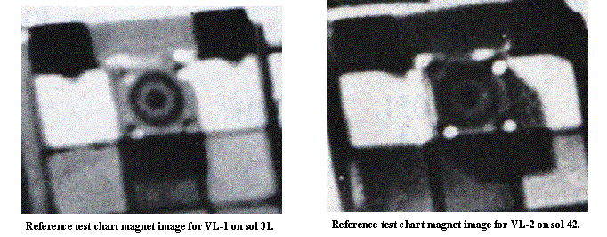

The oxides of Mars
Gilbert V. Levin*
Spherix Incorporated
ABSTRACT
Ever since the Viking Mission landed on Mars, a hypothetical film of highly oxidizing material has been applied to the Red Planet by a host of articles in the scientific literature. This putative chemical is credited with destroying all organic matter and preventing extant life. The only “evidence” cited for the oxidant is a re-interpretation of the Viking biology experiments. On the other hand, direct experimental evidence from Mariner 9, Viking, Pathfinder, and Kitts Peak clearly demonstrate that Mars does not have a highly oxidative surface. This should remove the primary reason commonly cited against the Viking LR experiment having detected microorganisms in the Martian soil. For those requiring further evidence, an unambiguous test is proposed for the next Mars lander.
Keywords: Mars oxidant, Martian soil oxidant, life on Mars, Viking Labeled Release experiment, astrobiology, extraterrestrial life.
1. BACKGROUND
It has been over a quarter of a century since the Viking Mission to Mars radioed to Earth its contradictory biological and chemical analyses. The Labeled Release (LR) life detection test gave positive evidence for microorganisms in the soil of Mars[1], a discovery few had predicted; however, the Molecular Analysis instrument, a gas chromatograph mass-spectrometer (GCMS), designed to identify the organic compounds widely predicted to be on Mars, found none to analyze[2]. Despite the fact that the GCMS required a million times more organic matter than the amount that, if present as living cells, could be detected by the LR[3], it was generally concluded that no life was present at the Viking sites, and by extension, anywhere on Mars.
2. THE OXIDANTS
A theory was promptly proposed[4] to explain both sets of results. It postulated the photochemical formation of the oxidant, H2O2, in the upper Martian atmosphere and deposition and survival of this labile chemical on the planet’s surface. There, the oxidant destroyed the organic materials brought by meteors, meteorites, comets, and interplanetary dust particles, together with the organic matter synthesized through Miller-Urey type reactions[5] as thought to have operated in the primitive atmosphere of Earth. This destruction of organic matter, in turn, prevented the evolution of life. Had life somehow evolved, it, according to this theory, would have been promptly destroyed by the oxidant. The Mars LR response was thus attributed to the H2O2 taken in with the soil sample. It was postulated that one or more of the LR nutrients was oxidized, producing a false positive result.
3. PROBLEMS WITH OXIDES ARISE
After several years of testing, it was reported[6] that H2O2 did not match the thermal sensitivity determined for the Martian agent responding in the LR, rendering it inadequate to the task of reproducing the LR results. Of 28 non-biological explanations published over the last 25 years, as seen in Table 1, 12 were variations of the oxidant theory, becoming by far the most popular explanation of the LR Mars results. Tacitly acknowledging weaknesses in the preceding attempts, each subsequent author sought to create a more supportable version. Indeed, two variations of the oxidant theory were published in the last year[7],[8].
TABLE 1
THEORIES PUT FORTH TO
REFUTE MARS LR EVIDENCE FOR LIFE
Oxidant Theories
1. Hydrogen
peroxide formed in atmosphere
2. Hydrogen
peroxide formed on rocks
3. Hydrogen
peroxide catalyzed by gamma iron
4. Hydrogen
peroxide formed on titanium dioxide
5. Potassium
dioxide in soil
6. Zinc
dioxide in soil
7. Manganese
dioxide in soil
8. Oxygen
plasma
9. Superoxides
in soil
10. Peroxynitrate
in soil
11. Polymeric
suboxides in soil
12. Iron
VI production of oxygen radicals
Other Theories
13. No
liquid water on surface of Mars
14. LR
response was “Too much too soon”
15. No
organics found in Mars soil
16. UV
irradiation destroys organics and life
17. Ionizing
radiation activates minerals to react with LR nutrient
18. Ionizing
radiation on oxygen-rich minerals produces disjunctions
19. Carbon
dioxide trapped in micropores of soil
20. Activated
halides in soil
21. Mineral
catalysis of LR medium
22. Mineral
catalysis of formate
23. Heat
of solution from nutrient wetting desiccated minerals
24. Iron
III decarbonylation of lactate
25. Smectite
clays
26. Palagonite
clays
27. Limonite
clay
28. Statistical
improbability of independent origin of life
None of the many attempts to establish the oxidant’s mimicry of the LR data did so. Nonetheless, their results were deemed sufficiently similar to the LR’s to validate the oxidant theory. Ironically, the only “evidence” for an oxidant in the LR sample was a re-interpretation of the very type of result that, prior to the Viking Mission, had been generally accepted as proof of an LR detection of life. Over the years, this circular reasoning was used to form a strong consensus among the scientific community in favor of the oxidant theory, even in the face of accreting contrary evidence.
A highly meaningful, but ignored result concerning hydrogen peroxide and organic matter on Mars was obtained by another Viking life detection test[9]. This Pyrolytic Release (PR) experiment sought to detect microbial photosynthesis. A problem related to Miller-Urey type synthesis was encountered during the development of the experiment. Synthetic Martian atmosphere, composed of CO and CO2, both labeled with 14C, was to be exposed to simulated Martian sunlight in the presence of Martian soil. Any photosynthetic organisms in the soil would, hopefully, metabolically incorporate one or both gases. Subsequent pyrolysis of the sample would release any such fixed carbon as a gas, thereby constituting evidence for life. The problem was that pre-mission tests showed that sterile controls also fixed these carbon gases.[10] On Mars, this would produce a false positive. Accordingly, a “fix” was developed in which an optical filter was placed over the synthetic sunlight lamp to remove the ultraviolet flux shorter than 320 nm. On Mars, the PR experiment produced weak “positive” signals. Extended counting showed the responses to be statistically significant. However, they were far below the pre-mission-established criteria as evidence for life. The Mars PR values were found to fall within the range of those obtained from PR control experiments using sterilized soil, even with the optical filter in place[11].
This result is highly significant for two reasons. First, this production of organic matter under Martian conditions is direct experimental evidence for the formation of organic matter on the surface of the planet. In fact, in commenting on organic formation in their experiment, prior to the mission the PR experimenters stated[12], “Our findings suggest that UV presently reaching the Martian surface may be producing organic matter . . . the amount of product found could be considerable over geologic time.” This makes the lack of finding organic matter by the GCMS curious. Secondly, the result is important with respect to peroxide: the PR demonstrated the absence of this or other oxidants. Were an oxidant present on the soil in amounts sufficient to oxidize organic matter, it would have oxidized the organic matter formed in the PR experiment. Instead, the organic matter formed and persisted throughout the sols of each test run and each heat-treated control. One designing an experiment to detect oxides on Mars might do no better than the test provided by the PR experiment. The experiment applies the sensitivity of the 14C technology to detect highly oxidizable material, possibly made even more sensitive by catalysis by gamma iron reported to be in the Martian soil.
Following the return of all the Viking LR data from Mars, a 3½-year study was undertaken[13] to investigate the hydrogen peroxide theory and other possible chemical or physical explanations of the Mars LR data. Mars analog soils prepared by JPL, based on the Viking x-ray fluorescent analysis, together with other simulated soils, were used to test the effect of hydrogen peroxide on the LR nutrient. The experiments were performed with and without the addition of the catalyst gamma iron. This considerable effort found that hydrogen peroxide was not a tenable explanation for the LR Mars results. That study also reported on the first direct search for hydrogen peroxide in the Martian atmosphere. This result was derived from data taken by the orbiting Mariner 9 Infrared Interferometer Spectrometer (IRIS)[14]. The frequencies scanned by that instrument included those absorbed by hydrogen peroxide. In preparing their paper, Levin and Straat recognized this fact and queried the appropriate IRIS team members about it[15]. A search of the data[16] found no signature for hydrogen peroxide. Based on instrument sensitivity, 8 x 10-4 cm/atm at STP was established as an upper limit for hydrogen peroxide through the entire column of the Mars atmosphere, equating to 1.2 x 10-2 percipitable µm. This value is some 2 to 3 orders of magnitude below the Martian atmospheric water abundance. Thus, any hydrogen peroxide formed in the atmosphere would quickly dissolve into the water vapor, and be diluted 100 to 1,000-fold. In contact with the soil, which at least seasonally and diurnally exceeded freezing temperatures at the Viking and Pathfinder sites, it is difficult to imagine survival of the hydrogen peroxide. If it somehow survived, H2O2 at such low concentration could not have effected the LR response. Furthermore, the paper reported[17], that the rate coefficient for the destruction of hydrogen peroxide by ultraviolet light exceeds that of its formation by a factor of 107. These findings also argued against any variant of oxidant produced from hydrogen peroxide, including metalloperoxides and superoxides. However, publication of the results of the laboratory experiments and the direct measurement for hydrogen peroxide in the Martian atmosphere did little to dissuade proponents of the hydrogen peroxide theory.
The next direct exploration for hydrogen peroxide in the Martian atmosphere occurred over the decade from the middle 80’s to the middle 90’s. Using Earth-based high-resolution spectroscopy through the Kitt Peak National Observatory 4-m telescope, Mars was examined[18] for H2O2, H2CO, HCl, CH4, and HDO. Under the best opportunity occurring during that period no spectrographic feature for H2O2 was found. This examination established an upper limit of 30 ppb for that oxidant throughout the atmospheric column of Mars, approximately one-half an order of magnitude below that established by Mariner 9.
Compelling direct evidence against hydrogen peroxide, or any highly oxidizing substance in the surface material of Mars, was provided by Viking in 1976, but only just revealed herein. One of the principal stated objectives of the Viking Magnetic Properties experiment[19] was to determine the oxidative state of the surface of Mars. It was stated in a pre-mission publication[20] that, “. . . on the basis of how much, if any, material is adhering to the magnet, we will try to draw some very general conclusions pertaining to the oxidation state of the surface. Mars is supposed to be a red planet and it has often been suggested that this is because there is lots of the mineral hematite (oxidized iron) on the surface, which makes rocks on Earth red, but this is a form of iron which is not at all magnetic. If there has been indeed very pervasive oxidation on the surface of Mars, I would not expect to pick up anything magnetic. On the other hand if there is a lot of material adhering to the magnet, it would certainly say that whatever the surface processes are on Mars, they are not innately highly oxidizing.” The report[21] on the Mission results contained images (Figure 1) of the target magnets deposited on and retrieved from the surface of Mars.
FIGURE 1
THE VIKING MAGNETIC
PROPERTIES EXPERIMENT

Rings of magnetic material from 2 mm to 4 mm thick adhered to all the magnets at both Viking sites. The report stated “the loose Martian surface material contains 1% to 7% highly magnetic mineral.” This seemingly highly important information concerning the oxidizing property of the surface of Mars has been overlooked since 1976 and has been, therefore, absent from all discussion of Martian oxidants.
The Pathfinder lander also contained a Magnetic Properties experiment[22] that exposed magnets to the surface material and to the atmospheric dust of Mars. Significant amounts of magnetic material adhered to all of the magnets. However, as with Viking, none of the reports from Pathfinder, co-authored by veterans of the Viking Magnetic Properties Experiment, carry any discussion of the results with respect to the pre-launch rationale cited for the Viking mission. Indeed, the Pathfinder report[23] goes against the thrust of that rationale by stating that the Martian soil is highly oxidizing. The evidence for that statement, however, is not provided by the Pathfinder Magnetic Properties experiment. Rather, the “highly oxidizing” status of the surface of Mars is attributed to the biology experiments of Viking[24]. A second paper[25] on the Viking Magnetic Properties experiment, like the first, makes no mention of magnetism as a determinant of oxidative state. Yet, none of the published papers refutes the pre-mission statement on the subject. A report[26] on the Pathfinder experiment states, “Both Viking landers had a weak and a strong magnet mounted on the backhoe of their soil samplers. These magnets were inserted directly into the Martian soil. Both magnets became quickly saturated with magnetic material.” The paper confirms the Viking estimate that the Martian soil contains 1% to 7% of a magnetic mineral, but does not discuss its significance with respect to oxidative state.
Under the discussion section of the paper[27], the statement is made, “Furthermore, the soil in general is not only highly oxidized, but also strongly oxidizing.” This sentence is not supported anywhere in the paper. Essentially the same statements are made in another paper[28] (by the same senior author and including all of his co-authors), “The soil in general is not only oxidized but is also strongly oxidizing, as evidenced by the effect on organic nutrients to which the soil was exposed in the Viking biology experiments (11).” Another report[29] on the Pathfinder Magnetic Properties experiment makes no mention of the oxidant state of the soil. Thus, the only “evidence” presented in the reports of the magnetic properties experiments on Viking and Pathfinder regarding the state of oxidation of the Martian soil, originally cast as a principle goal of the experiment, is a citation referencing the Viking biology data. Nor, in any paper, is there any disclaimer made concerning the pre-Mission criteria for determining the oxidizing state of the Martian surface material: any magnetic material picked up by the magnets meant that the Martian soil could not be highly oxidizing. If the Viking and Pathfinder magnetic properties experiments, indeed, proved that the surface was not highly oxidizing, this major finding, particularly major in light of the conflicts that have raged in the literature for the past 25 years, should be the subject of a major paper. On the other hand, if the pre-Viking statement describing and justifying the experiment has been shown to be erroneous, this fact should have been published in the reports on the magnetic properties experiments. As of this moment, it would seem that one is perfectly justified, on the basis of the experimental results of the magnetic properties experiments on Viking and Pathfinder, to conclude that they produced proof that the surface of Mars is not highly oxidizing. Based on the infrared reflectance spectra of the dark regions of Mars, it has been suggested[30] that the characteristic feature of Fe2+ indicates the presence of the ferrous mineral pyroxene. This conclusion is supported in a later paper[31] on the Pathfinder experiments that also says “the soils . . . may . . . contain a greater abundance of a less heavily oxidized component, like ferrous–bearing pyroxene (emphasis supplied).” Were the soil highly oxidizing, all ferrous iron would have been converted to ferric or more oxidized forms.
Each of the several approaches discussed herein to determine the oxidative state of Mars has supplied its respective proof of the absence of a highly oxidizing material on the surface of Mars. Yet, these proofs continue to be ignored. A variety of papers has appeared over the past several years speculating about how future life-seeking missions to Mars should avoid sampling where the oxidant is presumed to be. Elaborate robotic drilling machines have been proposed to get samples from beyond the “oxidant zone.” The ill-fated Mars Volatiles and Climate Surveyor (MVACS) carried an experiment to detect the oxidant(s), but carried no life detection test. The forthcoming Beagle II Mars lander, slated for 2003, will also carry an oxidant detection experiment. However, like the MVACS, it will not carry a life detection experiment. Nor, according to published plans of NASA, will any of the biennial missions planned for Mars throughout this decade carry life detection experiments.
It thus appears that the paradigm of a Mars sterilized by a highly oxidizing surface is too embedded in our scientific fabric to be set aside even by demonstrated proofs. As John Kennedy said, “the great enemy of truth is often not the lie¾deliberate, contrived and dishonest¾but the myth¾persistent, persuasive and unrealistic.” Returning to Table 1, it should be added that the other explanations proposed in attempts to reconcile the GCMS and LR results have been found to be futile also, leading to that paper’s claim that the Viking LR experiment detected living microorganisms in the soil of Mars.[32]
4. CONCLUSION
Direct observations of Mars, experiments on the planet, and laboratory work concur that the surface of Mars cannot be highly oxidizing. This conclusion finally removes the key reason cited against the possibility of life on Mars. That Mars is highly unlikely to be sterile is shown[33] by a review of recent literature. However, it seems that only another direct life detection experiment of a type that all biologists and biochemists would accept is required to effect the past-due paradigm change that will acknowledge the existence of microbial life on Mars. Such an experiment has been proposed[34],[35],[36],[37],[38]. It consists of an extension of the LR technology. A modified and miniaturized LR instrument would separately add optical isomers of 14C-labeled nutrient compounds to separate samples of Martian soil. Unambiguous proof of a living response would be given by the evolution of significantly different amounts of labeled gas from pairs of soil samples separately injected with the L- and D-isomers of respective compounds. All known forms of life show either an exclusive or very strong preference for D-carbohydrates and L-amino acids. The nature of the response could indicate a possible relationship, or an independent origin for Earth and Mars life forms. This simple experiment, based on demonstrated and reliable technology, placed on the next mission to Mars could resolve the problem that has been puzzling mankind for many centuries, and that has frustrated modern scientists since Pasteur’s attempt to recover extraterrestrial microorganisms in 1860, and, particularly since the confounding results of Viking 25 years ago.
ACKNOWLEDGMENTS
The outstanding work of Kathy
Brailer, Executive Assistant, Spherix, in searching and organizing the
references, and in working with the author on the many iterations of this paper
are warmly acknowledged.
This work was supported by
Spherix Incorporated.
REFERENCES
* glevin@spherix.com;
phone 301-419-3900; fax 301-210-4908; http://www.spherix.com;
Spherix Incorporated, 12051 Indian Creek Court, Beltsville, MD, USA 20705
[1]. Levin, G.V. and P.A. Straat, “Recent Results from the Viking Labeled Release Experiment on Mars,” J. Geophys. Res. 82, 28, 4663-4667, 1977.
[2]. Biemann, K., J. Oro, P. Toulmin III, L.E. Orgel, A.O. Nier, D.M. Anderson, P.G. Simmonds, D. Flory, A.V. Diaz, D.R. Rushneck, J.E. Biller and A.L. Lafleur, “The Search for Organic Substances and Inorganic Volatile Compounds in the Surface of Mars,” J. Geophys. Res. 82, 4641-4658, 1977.
[3]. Biemann, K., “The implications and limitations of the findings of the Viking Organic Analysis Experiment,” J. Mol. Evol. 14, 65-70, 1979.
[4]. Oro, J., presentation to Viking Science Team, JPL, August 1, 1976.
[5]. Miller, S.L., “A Production of Amino Acids Under Possible Primitive Earth Conditions,” Science 117, 528, 1953.
[6]. Levin, G.V. and P.A. Straat, “A Search for a Nonbiological Explanation of the Viking Labeled Release Life Detection Experiment,” Icarus, 45 494-516, 1981.
[7]. Tsapin et al., “Iron (VI): Hypothetical Candidate for the Martian Oxidant,” Icarus 147, 68-78, 2000.
[8]. Yen, A.S. et al., “Evidence That the Reactivity of the Martian Soil Is Due to Superoxide Ions,” Science 289, 1909-1912, 2000.
[9]. Horowitz, N.H., G.L. Hobby, and J.S. Hubbard, “Viking on Mars: The Carbon Assimilation Experiments,” J. Geophys. Res., 82, 4659-4662, 1977.
[10]. Hubbard, J.S., J.P. Hardy and N.H. Horowitz, “Photocatalytic Production of Organic Compounds from CO and H2O in a Simulated Martian Atmosphere,” Proc. Nat. Acad. Sci. 3, 574, 1971.
[11]. Hubbard, J.S., J.P. Hardy, G.E. Voecks and E.E. Golub, “Photocatalytic Synthesis of Organic Compounds from CO and Water: Involvement of Surfaces in the Formation and Stabilization of Products”, J. Mol. Evol., 2, 149-166, 1973.
[12]. Op Cit 10.
[13]. Op Cit 6.
[14]. Hanel, R.A., et al., “Infrared Spectroscopy Experiment on the Mariner 9 Mission: Preliminary Results,” Science 175, 305-308, 1972.
[15]. Op Cit 6.
[16]. Hanel, R. and Maguire, W., Mariner 9 IRIS team, personal communications, 1980.
[17]. Op Cit 6.
[18]. Krasnopolsky, V., G.L. Bjoraker, M.J. Mumma and D.E. Jennings, “High-resolution spectroscopy of Mars at 3.7 and 8.4 mm: A sensitive search for H2O2, H2CO, HCl, and CH4, and detection of HDO,” J. Geophys. Res., 102, No. E3, 6525-6534, 1997.
[19]. Hargraves, R.B., D.W. Collinson, R.E. Arvidson and C.R. Spitzer, “The Viking Magnetic Properties Experiment: Primary Mission Results,” J. Geophys. Res., 82, 4547, 1977.
[20]. Hargraves, R.B., in The Viking Mission to Mars, Martin Marietta Corporation, Denver, 1975.
[21]. Op Cit 19.
[22]. Hviid, S.F. et al., “Results of the Magnetic Properties Experiments on the Mars Pathfinder Lander: Preliminary Results,” Science 278, 5344, 1768-1770, 1997.
[23]. Ibid.
[24]. Oyama, V.I., B.J. Berdahl, F. Woeller, and M. Lehwalt, “The chemical activities of the Viking Biology Experiments and the arguments for the presence of superoxides, peroxides, gamma Fe2O3 and carbon suboxide polymer in the Martian soil,” COSPAR—Life Sciences in Space Research, 16, 1-6, 1978.
[25]. Hargraves, R.B., D.W. Collinson, R.E. Arvidson, and P.M. Gates, “Viking magnetic properties experiment: Extended mission results,” J. Geophys. Res. 84, 8379-8384, 1979.
[26]. Op Cit 22.
[27]. Op Cit 22.
[28]. Hviid, S.F. et al., “Results of the Magnetic Properties Experiment on the Mars Pathfinder Lander,” Proceedings of the 29th Lunar and Planetary Science Conference, Houston, Texas, March 16-20, 1998.
[29]. Gunnlaugsson, H.P. et al., “Instruments for the Magnetic Properties Experiments on Mars Pathfinder,” Planet. Space Sci. 46, 4, 449-459, 1998.
[30]. Moersch, J., “Oxidation State of Surface Material,” http://helio.estec.esa.nl/intermarsnet/redreport/node28.html, in ESA Pub. D/SCI(96)2, Apr. 4, 1996.
[31]. Bell, J.F. et al., “Mineralogy, Composition, and Origin of Soil and Dust at the Mars Pathfinder Landing Site,” Proceedings of the 29th Lunar and Planetary Science Conference, Houston, Texas, March 16-20, 1998.
[32]. Levin, G.V., “The Viking Labeled Release Experiment and Life on Mars,” Instruments, Methods, and Missions for the Investigation of Extraterrestrial Microorganisms, SPIE Proceedings 3111, 146-161, 1997.
[33]. Levin, G.V., “Scientific logic for life on Mars,” Instruments, Methods, and Missions for the Investigation of Extraterrestrial Microorganisms, SPIE Proceedings 2001, in press.
[34]. Levin, G.V., “Analysis: Life or Inorganic Forms ‘ALIF’,” proposal to NASA Headquarters in response to NASA AO No. 95-OSS-03, August 8, 1995.
[35]. Op Cit 32.
[36]. Levin, G.V., and R.L. Levin, “Liquid water and life on Mars,” Instruments, Methods, and Missions for Astrobiology, SPIE Proceedings 3441, 30-41, 1998.
[37]. Levin, G.V., “Chirality Experiment to Investigate Nature of Mars Surface Activity,” unsolicited proposal submitted to NASA headquarters, July 17, 2000.
[38]. Levin, G., L. Kuznetz, and A. Lafleur, “Approaches to Resolving the Question of Life on Mars,” Instruments, Methods, and Missions for Astrobiology, SPIE Proceedings, 4137, 48-62, 2000.